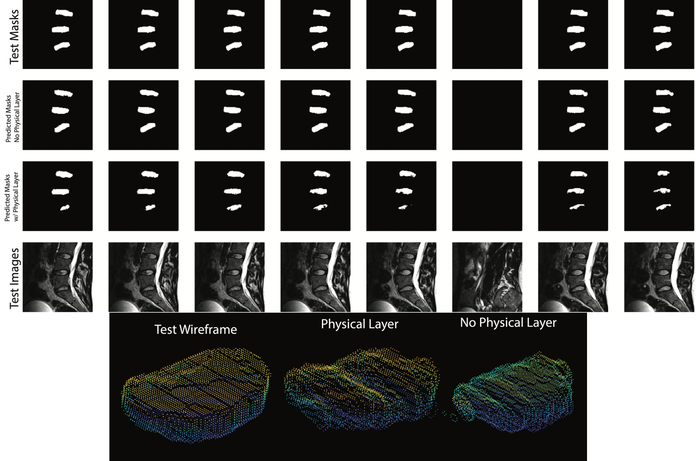

| Paper PDF |

|
The primary goal of this project was to develop a methodology for creating 3D surface models of lumbar intervertebral discs (IVD) via semantic segmentation of magnetic resonance (MR) images. To create an auto-segmentation model, we used a variation of the U-net architecture, which has proven useful for semantic segmentation of biomedical images (base model). A second model was created that incorporated a Physical Layer (PL) by applying a learned gamma correction to the MR images. To analyze the results, a 3D surface model from each of the two networks was created and compared to those from our manual segmentations. The base and PL models had dice similarity scores of 66.83 and 63.83, respectively. The segmentations from the base model generated a mean IVD volume of 30,539.72mm^3 while the PL resulted in a mean volume of 22133.55mm^3; both models under-segmented compared to the ground truth of 34,330.82mm^3. Neither model clearly outperformed the other, and future work will be done to improve the models. Please feel free to add any additional links that are relevant here. |
|
|
| Paper: |
| Code and Data: |